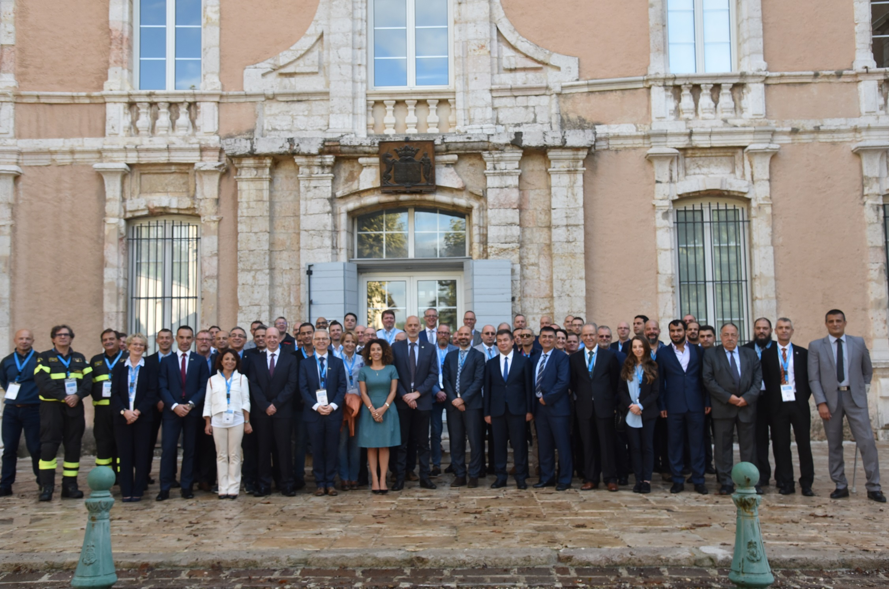

- The INSARAG Africa, Europe and Middle East (AEME) regional group meeting took place last week from 17-18 October in Aix en Provence, generously hosted by the Government of France and the Disaster and Emergency Management Authority (Direction Générale de la Sécurité Civile et de la Gestion des Crises, DGSCGC). The meeting which brought together 67 participants from the region and beyond representing 28 countries and 2 organizations aimed at electing a Regional Troika 2019, finalizing the INSARAG AEME Regional Plan for 2019, discussing the key INSARAG issues following the 2018 INSARAG Steering Group meeting, namely: Changed in the classification system/ new IER checklist, Light Teams Quality Assurance Standards, National Accreditation Processes, INSARAG Global Meeting 2020, and INSARAG Guidelines feedback.
- INSARAG Regional Meetings are a gathering of international USAR policy makers, team leaders, and governmental representatives, to exchange information about technical and political USAR issues in the INSARAG context.
- Presentations included one delivered by the EU-European Emergency Response Capacity, the INSARAG Earthquake exercise in Armenia and the National Accreditation process done in the Americas’ region.

AEME 2018 Meeting Summary
Annex A_List of participants
Annex B_ Agenda
Annex C 1
Annex C 2
Annex C 3
Annex C 4